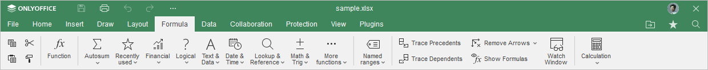
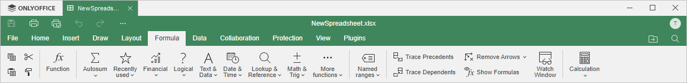

Kartica Formula
Kartica Formula u Spreadsheet Editor-u omogućava jednostavan rad sa svim funkcijama.
Odgovarajući prozor Online Spreadsheet Editor-a:

Odgovarajući prozor Desktop Spreadsheet Editor-a:

Pomoću ove kartice možete:
- ubacivati funkcije pomoću dijaloga Insert Function,
- brzo pristupiti Autosum formulama,
- pristupiti 10 nedavno korišćenih formula,
- raditi sa formulama grupisanim po kategorijama,
- raditi sa imenovanim opsezima,
- pratiti prethodnike i zavisne ćelije,
- prikazivati formule u ćelijama umesto rezultata formula,
- koristiti Watch Window,
- koristiti opcije izračunavanja: ponovo izračunati celu radnu svesku ili samo trenutni radni list.